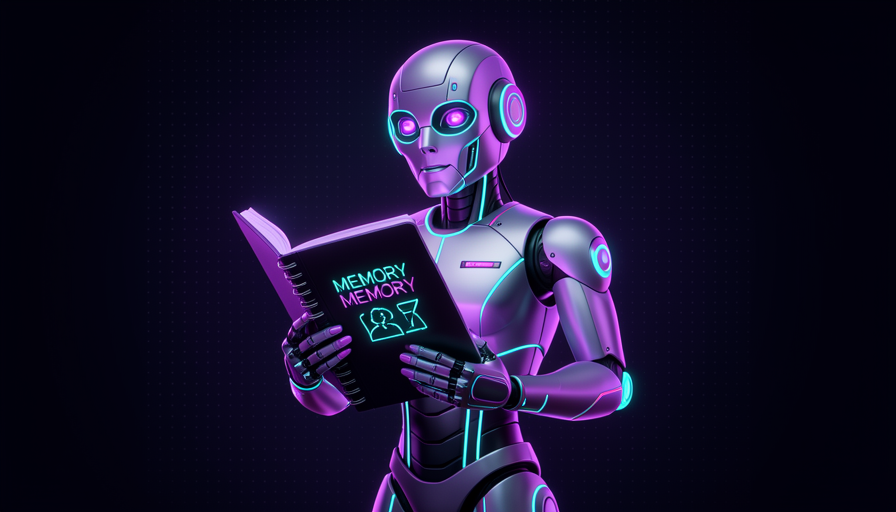
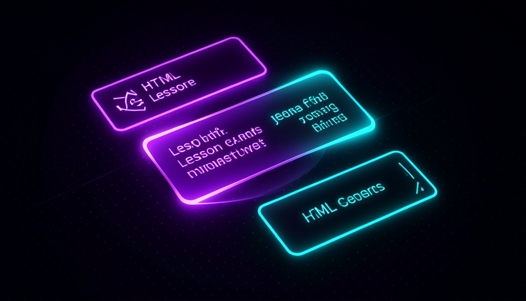
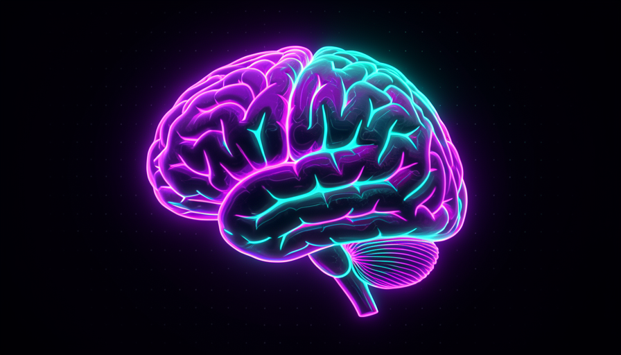

📖 Glossário vivo (leia antes — volte sempre que precisar)
Este módulo introduz o vocabulário de skills com memória. Fixe estes termos — eles voltam o módulo inteiro:
mission.md, o learning record, as lições). É o caderno do aluno.🧠 Stateful × stateless
🧠 Imagine assim: dois professores. O primeiro te dá uma aula perfeita e, no dia seguinte, não faz ideia de quem você é — recomeça do zero toda vez. O segundo tem um caderno sobre você: sabe o que já aprendeu, onde travou, o que vem depois. O segundo professor é stateful. É ele que a Teach skill imita.
A maioria das skills que você viu até aqui é stateless — sem memória. A grill-me, por exemplo: ela te entrevista, chega num entendimento, e pronto; na próxima vez começa do nada. Isso é ótimo para tarefas pontuais. Mas ensinar é diferente: ninguém aprende do zero toda aula. Por isso a Teach skill é stateful — ela guarda estado num workspace (uma pasta de trabalho) para lembrar o que você fez.
Nas palavras de Pocock, a Teach skill "roda num workspace — ela salva estado lá". Essa é a chave técnica do módulo: o "lembrar" não é mágica do modelo (o modelo esquece tudo ao fim de cada conversa); é arquivo salvo no disco. A skill escreve o que aprendeu sobre você, e na próxima sessão lê esses arquivos de volta. Erro comum: achar que o agente "se lembra" sozinho. Não — sem estado salvo, não há memória. O que a Teach skill faz de especial é transformar memória em arquivos que sobrevivem ao reset da conversa.
À esquerda, sessões soltas (stateless). À direita, todas escrevem e leem o mesmo workspace — por isso a Teach skill lembra.

⚠️ Erro comum de iniciante
Confundir o contexto da conversa (que o modelo "lembra" só enquanto a janela está aberta) com estado salvo. Quando você reseta a conversa, o contexto some — só o que estiver em arquivo sobrevive. Stateful = arquivo no disco, não memória do modelo.
Em 1 frase: stateless esquece a cada sessão; stateful salva arquivos e lembra — e ensinar exige lembrar.
Indo mais fundo (opcional): toda skill deveria ser stateful?
Não. Estado tem custo: a skill precisa de uma pasta, regras de onde salvar, e cuidado para não "lembrar" coisa errada. A maioria das skills é stateless de propósito — mais simples e previsível. Estado só vale quando a tarefa continua no tempo: ensinar, acompanhar um projeto longo, manter um diário de decisões. Pocock contrasta a Teach (stateful) justamente com skills como a grill-me (stateless), que não precisam de estado local.
🎯 O mission.md
🧠 Imagine assim: um bom personal trainer não pergunta "qual exercício você quer fazer?". Ele pergunta "aonde você quer chegar?". Se você diz "quero correr uma maratona", ele monta tudo a partir disso. O mission.md é essa conversa, escrita num arquivo.
Antes de ensinar qualquer coisa, a Teach skill faz algo contra-intuitivo: ela não pergunta sobre o assunto. Ela pergunta sobre a sua missão. Pocock descreve a demo: um vibe coder quer "preencher as lacunas". O prompt dele é simples, em inglês claro, falando da missão (o que quer alcançar), não da matéria. Nas palavras dele: "talking to a teacher; the agent is my teacher." A skill então alinha com o que você quer e cria o mission.md.
O mission.md tem quatro perguntas-chave: quem é você, o que quer construir, por que importa e como é o sucesso. Pocock cita exemplos das perguntas que a skill faz: "o que você está construindo?", "o que ship better software significa pra você?", "qual é o projeto concreto?". Por trás disso há uma definição forte de ensino: "teaching = not getting info into your head but orienting you in the world" — ensinar não é despejar informação na sua cabeça, é te orientar no mundo. Por isso a missão vem antes da matéria: sem saber aonde você vai, qualquer aula é genérica.
Abaixo está um mission.md de exemplo, no formato que a Teach skill produziria para esse mesmo vibe coder. Note como ele é curto e concreto — é o "norte" que vai guiar todas as lições. Copie e adapte o seu:
# Mission ## Quem sou Monto apps com IA ha 6 meses (vibe coder). Sei pedir features, mas nao domino os fundamentos por baixo. ## O que quero construir Um SaaS de agendamento pra barbearias. Ja tenho o front no ar, mas quebro o backend toda vez que mexo nele. ## Por que importa Quero parar de depender 100% da IA e conseguir consertar meu proprio codigo quando ele quebra. "Ship better software" = entregar sem medo de quebrar o que ja funciona. ## Como e o sucesso - Entendo git o bastante pra desfazer um erro com confianca - Sei ler uma mensagem de erro e achar a causa sozinho - Escrevo 1 teste que pega uma regressao antes do deploy ## Ponto de partida (a skill preenche) - Maquina: macOS, git instalado, Node 20 - Conhecido: HTML/CSS basico, prompts; Lacunas: git, debugging, testes
Recuperação rápida: por que a Teach skill pergunta sobre a missão antes do assunto?
Em 1 frase: o mission.md captura aonde você quer chegar — porque ensinar é orientar, não despejar informação.
📒 O learning record
🧠 Imagine assim: a caderneta de saúde de uma criança. Médico nenhum decora cada paciente — ele abre a caderneta e vê o histórico: o que já tomou, o que falta, alergias. O learning record é a caderneta do seu aprendizado.
Se o mission.md é o destino, o learning record é o diário da viagem. Pocock lista o que ele guarda: a missão, o ponto de partida, as decisões tomadas e as estimativas (quanto falta, o que vem depois). É esse arquivo que, no início de cada sessão, a skill lê para responder à pergunta "onde paramos?". Sem ele, a skill seria apenas mais uma stateless — daria a mesma aula introdutória para sempre.
Onde a Teach skill começa, segundo a demo? Ela é personalizada: já checou o setup da sua máquina (se o git está instalado, por exemplo) e usa isso para decidir o início. Para o vibe coder, ela começa por git (o "botão de desfazer"), depois ler erros, debugging, como software é entregue e testes. Cada passo desses vira uma decisão registrada no learning record. Por que isso importa: o registro transforma um professor genérico num professor seu — que sabe que você já passou por git e que a próxima lição é debugging.

🔬 Exemplo resolvido: a 2ª sessão do vibe coder
Acompanhe como o estado salvo muda tudo entre a sessão de ontem e a de hoje:
Sem learning record (stateless)
Hoje: "Oi! Vamos aprender programação? Você já usa git?" → repete a introdução de ontem. Você revive a mesma aula e perde tempo.
Com learning record (stateful)
Hoje: a skill lê o record → "Ontem você fechou git e ler erros. Hoje atacamos debugging no seu SaaS de barbearia." → continua de onde parou.
Em 1 frase: o learning record é a caderneta que responde "onde paramos?" — é ele que faz a skill ser sua.
🖥️ Lições em HTML
🧠 Imagine assim: a diferença entre receber uma receita rabiscada num papel e abrir um livro de receitas ilustrado, com fotos e passos numerados. O conteúdo pode ser o mesmo — mas o segundo te ensina muito melhor. A Teach skill escolhe o "livro ilustrado".
A Teach skill não despeja a aula no terminal. Ela cria um reference cheat sheet (uma "cola" de referência) e a primeira lição em HTML, que abre no navegador. Por quê? Porque, nas palavras de Pocock, o HTML é "mais rico que o terminal" — comporta títulos, imagens, cores, blocos de código destacados. É a mesma lógica que faz este curso usar HTML em vez de um arquivo de texto: você lê melhor, lembra melhor.
E há um segundo ingrediente: a lição é personalizada. A skill já checou o setup da sua máquina — por isso não te manda "instale o git" se o git já está instalado. Dentro das lições há quizzes e exercícios reais no terminal. Sobre os quizzes, Pocock é enfático: "quizzes are unreasonably effective" — eles aumentam a storage strength (força de armazenamento). Em vez de só ler, você é forçado a recuperar o que aprendeu — e recuperar é o que fixa. Erro comum: achar que "ler de novo" basta; a retenção real vem de ser testado. Você verá a teoria disso no módulo 3.4.

Indo mais fundo (opcional): por que quizzes funcionam tão bem?
É o chamado testing effect (efeito do teste): o ato de recuperar uma informação da memória a fortalece muito mais do que simplesmente revê-la. Reler dá a ilusão de que você sabe; ser testado revela buracos e, ao mesmo tempo, grava a resposta com mais força. Por isso a Teach skill intercala quiz a cada lição — e por isso este curso tem os botões de "recuperação rápida" no fim de tópicos. Mais sobre a teoria (ZDP, recall, spaced repetition) no módulo 3.4.
Em 1 frase: lições em HTML (mais ricas que o terminal) + quizzes que forçam recall = aulas que realmente grudam.
💾 Estado local que lembra
🧠 Imagine assim: um jogo que salva seu progresso num "save file". Você fecha o jogo, volta semanas depois, carrega o save — e está exatamente onde parou. O workspace da Teach skill é esse save file.
Juntando tudo: o estado local da Teach skill vive num workspace e é composto de três peças que você já conhece — o mission.md (o destino), o learning record (o diário) e as lições em HTML já geradas. Pocock resume o ciclo: a skill manda você ler a fonte primária (no caso do git, o Pro Git book), convida você a fazer perguntas e a criar a próxima lição. Cada uma dessas ações atualiza o estado — o save file cresce a cada sessão.
Aqui está a definição que fecha o módulo, direto de Pocock: "stateful skill (lembra o que você fez) × stateless (não precisa de estado local)." A Teach skill é o caso raro em que vale carregar estado, porque o aprendizado é contínuo — não cabe numa sessão. Detalhe de implementação que importa: como a skill é agnóstica de agente, esse estado em arquivos a faz funcionar em Claude Code, Codex e afins (você instala com npx skills latest add e escolhe a teach skill — veremos no módulo 3.6). O estado mora no seu disco, não preso a uma ferramenta.
Em 1 frase: mission + record + lições formam um save file no seu disco — é o que torna a Teach skill stateful e portátil.
🛠️ Recriar o conceito
🧠 Imagine assim: você não precisa comprar a fábrica de bicicletas para ter uma bicicleta — você aprende como ela é montada e monta a sua. O conceito da Teach skill é simples o bastante para você recriar uma versão sua.
Fechando: a Teach skill não é mágica — é um padrão. Pocock conta que aprendeu cubo mágico com ela e resolve de memória; chama de "extremely effective". Mas o que a faz boa não é o modelo: é o padrão de skill stateful. E esse padrão você pode reaproveitar para qualquer aprendizado contínuo: um workspace + mission.md (destino) + learning record (diário) + lições ricas com quiz. Aliás, Pocock dá uma dica direta nesse espírito: ao corrigir bugs repetidos, peça ao agente para gerar um HTML "tipo teach skill" com os padrões dos seus erros. O conceito viaja. Use o esqueleto abaixo para montar a sua versão:
Voce e meu professor. Trabalhe num workspace e SALVE estado lah. 1) ALINHE A MISSAO (nao o assunto). Pergunte uma de cada vez: - quem sou eu? o que quero construir? por que importa? - como e o sucesso? -> escreva ./workspace/mission.md 2) CHEQUE MEU SETUP (git instalado? linguagem? SO) e registre. 3) MANTENHA UM LEARNING RECORD em ./workspace/record.md: missao, ponto de partida, decisoes, o que vem depois. 4) ENSINE EM LICOES HTML (abrem no navegador, mais ricas que terminal): - personalizadas pro meu setup - com exercicios reais no terminal - 1 quiz por licao (recall > releitura) - aponte a FONTE PRIMARIA pra eu ler 5) AO FIM: convide perguntas + crie a proxima licao + atualize o record. Regra: voce ESQUECE entre sessoes; so o que estiver em arquivo sobrevive.
Recuperação rápida: o que torna a Teach skill stateful, na prática?
Em 1 frase: a Teach skill é um padrão (workspace + missão + record + lições) que você pode recriar para qualquer aprendizado contínuo.
🧾 Resumo do Módulo
Próximo módulo:
3.4 — Ensino que retém: a teoria por trás da Teach skill (zona de desenvolvimento proximal, conhecimento como grafo, recall e spaced repetition).